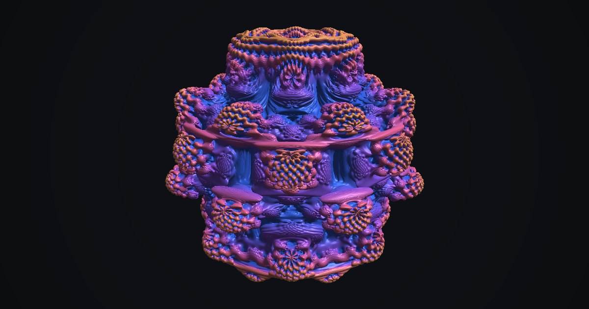

Math Explorer · Fractals
Fractal Explorer: Mandelbrot set, Julia sets and 3D fractals
Zoom into the Mandelbrot set until the numbers run out, steer through Julia sets, and fly into 3D fractals like the Mandelbulb.

A fractal is a shape that keeps its detail however far you zoom in. The Mandelbrot set comes from one tiny rule, z → z² + c, repeated over and over: the points where the numbers never fly off to infinity are coloured black, and the rest are coloured by how fast they escape. That simple rule hides spirals, seahorses and miniature copies of the whole set, all the way down.
Math Explorer draws them live on your graphics card. Deep zoom keeps going far past the point where ordinary numbers lose precision, using extra-precise arithmetic. The 3D shapes are drawn by ray marching, with shadows, see-through soap-film bubbles and a dive that steers toward the most interesting detail. With music playing, the 3D shapes dance to the beat.
Things to try
- Press G (or tap) to dive into the Mandelbrot set and let it steer toward the busy edges
- Switch on Julia link and drag on the map to see how every point of the Mandelbrot set has its own Julia set
- Choose 3D and fly into the Mandelbulb, the Mandelbox or a hyperbolic honeycomb
- Grow a fern or a dragon curve from a few simple rules
- Export any 3D fractal as an STL file and 3D print it